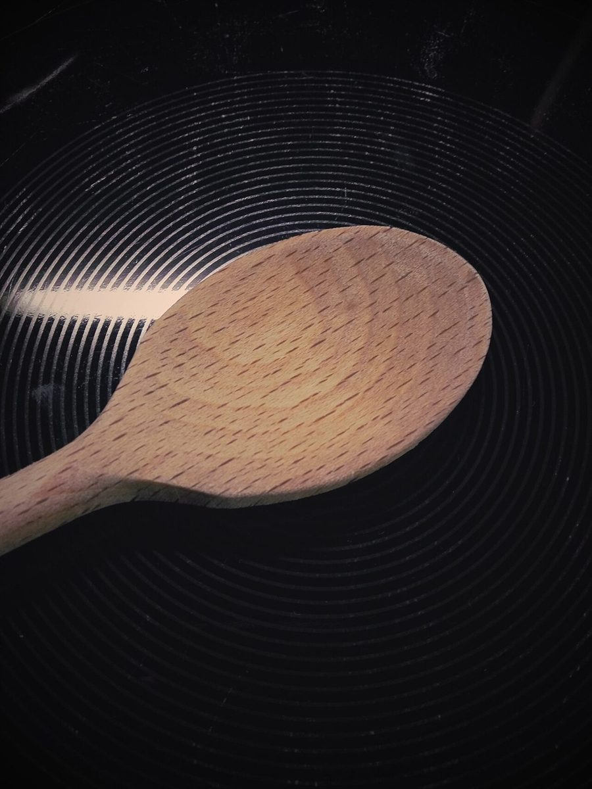
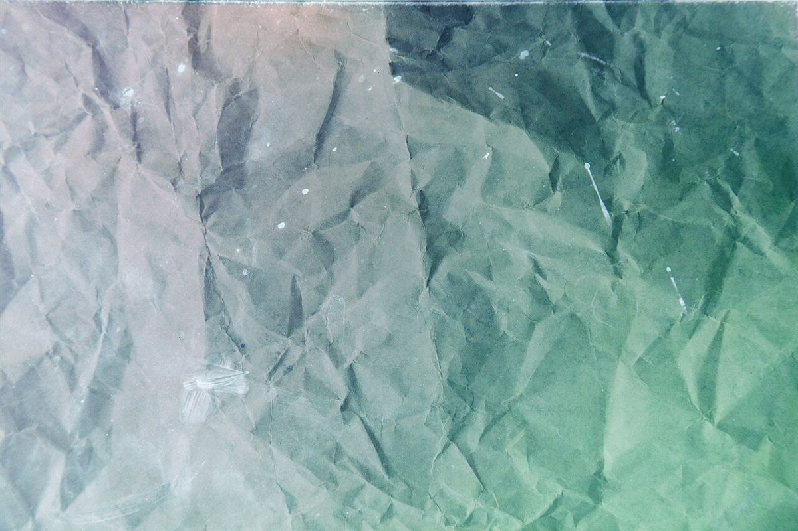

2号
メニュー
メニュー・価格は準備中です。確認できた内容だけをここに載せます。
下の写真と空欄の束は、ページの雰囲気づくりのイメージです。実際の提供内容や取扱いを示すものではありません。
束その1
準備中
束その2
準備中
束その3
準備中
メニュー・価格が確認でき次第、輪ゴムで束ねるように分類して掲載します。最新の情報はInstagramをご覧ください。
Instagramを見るイメージ
手もとのイメージ写真



- 密閉容器に入った豆とスプーン(イメージ)
- 暗い背景に置かれた木のスプーン(イメージ)
- しわを寄せた紙の質感(イメージ)
ご案内
店舗情報
| 所在地 | 〒755-0032 山口県宇部市寿町2丁目6-12 |
|---|---|
| 電話 | 090-8361-7384 |
| 営業時間 | 準備中 |
| 定休日 | 準備中 |
| ご予約 | 準備中 |
| 駐車場 | 準備中 |
| SNS | Instagram @kufusha_books.etc |